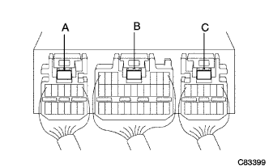

SRS Airbag System Warnin Grand Park Lighting (no diary cord) |
| Step 1 | Airbag sensor ASSY CTR connector connection status inspection |
Separate the battery's minihana stormy and wait for 90 seconds.
Inspect the connection status of 3 connectors for airbag sensor ASSY CTR.
|
| ||||
| OK | |
| Step 2 | Airbag Sensor ASSY CTR connector half a joint inspection pin inspection |
|  |
Use the SST (Toyota Electrical Tester) to apply a tester stick to the half-check pin of the three connectors for the airbag sensor ASSY CTR, and check the conversation between each connector (A-B, A-C, B-C).
|
| ||||
| OK | ||
| ||